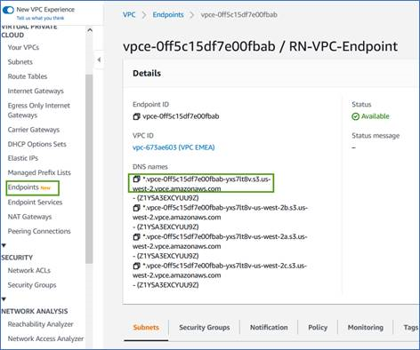
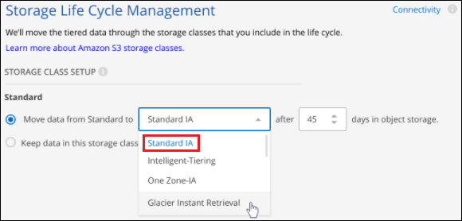
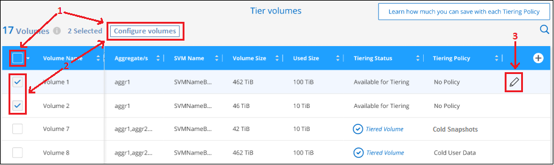

Dokumentationsänderungen beantragen
Dokumentationsänderungen beantragen In GitHub bearbeiten
In GitHub bearbeiten Leitfaden für Beitragende
Leitfaden für BeitragendeTiering von Daten von lokalen ONTAP Clustern zu Amazon S3
Beitragende
Freier Speicherplatz auf ONTAP-Clustern vor Ort durch Tiering inaktiver Daten in Amazon S3
Schnellstart
Führen Sie die folgenden Schritte aus, um schnell zu beginnen: In den folgenden Abschnitten dieses Themas finden Sie Details zu jedem Schritt.
 Geben Sie die Konfigurationsmethode an, die Sie verwenden möchten
Geben Sie die Konfigurationsmethode an, die Sie verwenden möchtenLegen Sie fest, ob Sie Ihr ONTAP Cluster vor Ort über das öffentliche Internet direkt mit AWS S3 verbinden oder ob Sie ein VPN oder AWS Direct Connect verwenden und den Datenverkehr über eine private VPC Endpunktschnittstelle zu AWS S3 leiten möchten.
 Bereiten Sie Ihren BlueXP Connector vor
Bereiten Sie Ihren BlueXP Connector vorWenn Sie bereits einen Connector in Ihrer AWS VPC oder Ihrem Standort implementiert haben, sind Sie alle festgelegt. Ist dies nicht der Fall, müssen Sie eine Connector für das Tiering von ONTAP-Daten zu AWS S3 Storage erstellen. Außerdem müssen Sie die Netzwerkeinstellungen für den Connector anpassen, damit er eine Verbindung zu AWS S3 herstellen kann.
 Vorbereiten Ihres lokalen ONTAP Clusters
Vorbereiten Ihres lokalen ONTAP ClustersErkennung des ONTAP Clusters in BlueXP, Überprüfung der Mindestanforderungen des Clusters und Anpassung der Netzwerkeinstellungen, damit die Verbindung zum AWS S3 Cluster möglich ist
 Amazon S3 als Tiering-Ziel vorbereiten
Amazon S3 als Tiering-Ziel vorbereitenRichten Sie Berechtigungen für den Connector ein, um den S3-Bucket zu erstellen und zu managen. Darüber hinaus müssen Berechtigungen für den On-Premises-ONTAP-Cluster eingerichtet werden, damit er Daten lesen und in den S3-Bucket schreiben kann.
 Aktivieren Sie Cloud Tiering auf dem System
Aktivieren Sie Cloud Tiering auf dem SystemWählen Sie eine lokale Arbeitsumgebung aus, klicken Sie für den Tiering-Service auf Aktivieren und befolgen Sie die Anweisungen zum Tiering von Daten an Amazon S3.
 Lizenzierung einrichten
Lizenzierung einrichtenNach Abschluss der kostenlosen Testversion können Sie Cloud Tiering über ein Pay-as-you-go-Abonnement, eine BYOL-Lizenz von ONTAP Cloud Tiering oder eine Kombination aus beiden Lizenzen bezahlen:
-
Wenn Sie sich über den AWS Marketplace anmelden möchten, "Rufen Sie das BlueXP Marketplace Angebot auf"Klicken Sie auf Abonnieren, und folgen Sie dann den Anweisungen.
-
Wenn Sie eine BYOL-Lizenz von Cloud Tiering nutzen möchten, Kontaktieren Sie uns, und dann "Fügen Sie es über das BlueXP Digital Wallet Ihrem Konto hinzu".
Netzwerkdiagramme für Verbindungsoptionen
Es gibt zwei Verbindungsmethoden, die Sie bei der Konfiguration von Tiering von lokalen ONTAP Systemen zu AWS S3 verwenden können.
-
Öffentliche Verbindung: Über einen öffentlichen S3-Endpunkt wird das ONTAP System direkt mit AWS S3 verbunden.
-
Private Verbindung: Verwenden Sie ein VPN oder AWS Direct Connect und leiten Sie den Datenverkehr über eine VPC-Endpunktschnittstelle mit einer privaten IP-Adresse weiter.
Das folgende Diagramm zeigt die Methode Public Connection und die Verbindungen, die Sie zwischen den Komponenten vorbereiten müssen. Sie können einen Connector, den Sie an Ihrem Standort installiert haben, oder einen Connector verwenden, den Sie in der AWS VPC implementiert haben.
Das folgende Diagramm zeigt die Methode private Verbindung und die Verbindungen, die Sie zwischen den Komponenten vorbereiten müssen. Sie können einen Connector, den Sie an Ihrem Standort installiert haben, oder einen Connector verwenden, den Sie in der AWS VPC implementiert haben.


|
Die Kommunikation zwischen einem Connector und S3 dient nur der Einrichtung von Objekt-Storage. |
Bereiten Sie den Konnektor vor
Der BlueXP Connector ist die Hauptsoftware für BlueXP-Funktionen. Für das Tiering inaktiver ONTAP-Daten ist ein Connector erforderlich.
Erstellen oder Umschalten von Anschlüssen
Wenn Sie bereits einen Connector in Ihrer AWS VPC oder Ihrem Standort implementiert haben, sind Sie alle festgelegt. Falls nicht, müssen Sie an einem dieser Standorte einen Connector erstellen, um ONTAP-Daten in AWS S3 Storage zu verschieben. Sie können keinen Connector verwenden, der bei einem anderen Cloud-Provider bereitgestellt wird.
Anforderungen für Connector-Netzwerke
-
Stellen Sie sicher, dass das Netzwerk, in dem der Connector installiert ist, folgende Verbindungen ermöglicht:
-
Eine ausgehende Internetverbindung über Port 443 (HTTPS) zum Cloud Tiering Service
-
Eine HTTPS-Verbindung über Port 443 an Ihren S3-Objekt-Storage ("Siehe die Liste der Endpunkte")
-
Eine HTTPS-Verbindung über Port 443 an Ihre ONTAP-Cluster-Management-LIF
-
-
"Stellen Sie sicher, dass der Connector über Berechtigungen zum Management des S3-Buckets verfügt"
-
Wenn Sie über eine direkte Verbindung oder eine VPN-Verbindung zwischen Ihrem ONTAP-Cluster und der VPC verfügen und die Kommunikation zwischen dem Connector und S3 im internen AWS Netzwerk verbleiben soll (eine private Verbindung), müssen Sie eine VPC Endpunkt-Schnittstelle zu S3 aktivieren. Informationen zur Einrichtung einer VPC-Endpunktschnittstelle finden Sie unter.
Bereiten Sie den ONTAP Cluster vor
Ihre ONTAP-Cluster müssen beim Tiering von Daten zu Amazon S3 die folgenden Anforderungen erfüllen.
ONTAP-Anforderungen erfüllt
- Unterstützte ONTAP Plattformen
-
-
Bei Verwendung von ONTAP 9.8 und höher können Daten von AFF Systemen oder FAS Systemen mit reinen SSD-Aggregaten oder rein HDD-basierten Aggregaten verschoben werden.
-
Bei Verwendung von ONTAP 9.7 und früher können Sie Daten von AFF Systemen oder FAS Systemen mit reinen SSD-Aggregaten verschieben.
-
- Unterstützte ONTAP-Versionen
-
-
ONTAP 9.2 oder höher
-
ONTAP 9.7 oder höher ist erforderlich, wenn Sie eine AWS PrivateLink-Verbindung zum Objektspeicher verwenden möchten
-
- Unterstützte Volumes und Aggregate
-
Die Gesamtzahl der Volumes, die in Cloud Tiering Tiers möglich sind, ist unter Umständen kleiner als die Anzahl der Volumes in Ihrem ONTAP System. Das liegt daran, dass Volumes von einigen Aggregaten nicht abgestuft werden können. In der ONTAP-Dokumentation finden Sie Informationen zu "Funktionalität oder Funktionen, die nicht von FabricPool unterstützt werden".
|
|
Cloud Tiering unterstützt FlexGroup Volumes ab ONTAP 9.5. Setup funktioniert wie jedes andere Volume. |
- Erforderlicher Zugriffsparameter für Anwendungen
-
Der Cluster-Admin-Benutzer muss über „Konsole“-Anwendungszugriff verfügen. Sie können dies mit dem ONTAP-Befehl überprüfen
security login show. „Konsole“ sollte in der Spalte Application für den Benutzer „admin“ angezeigt werden. Verwenden Sie diesecurity login createBefehl, um ggf. Zugriff auf Konsolenanwendung hinzuzufügen. "Weitere Informationen finden Sie in den Befehlen „Security Login“".
Netzwerkanforderungen für Cluster
-
Das Cluster erfordert eine eingehende HTTPS-Verbindung vom Connector zur Cluster-Management-LIF.
Es ist keine Verbindung zwischen dem Cluster und dem Cloud Tiering Service erforderlich.
-
Für jeden ONTAP Node ist eine Intercluster-LIF erforderlich, die die Volumes hostet, die Sie abstufen möchten. Diese Intercluster LIFs müssen in der Lage sein, auf den Objektspeicher zuzugreifen.
Das Cluster initiiert eine ausgehende HTTPS-Verbindung über Port 443 von den Intercluster-LIFs zum Amazon S3 Storage für Tiering-Vorgänge. ONTAP liest und schreibt Daten in und aus dem Objekt-Storage – der Objekt-Storage initiiert nie – er reagiert einfach darauf.
-
Die Intercluster-LIFs müssen dem IPspace zugewiesen werden, den ONTAP für die Verbindung mit dem Objekt-Storage verwenden sollte. "Erfahren Sie mehr über IPspaces".
Wenn Sie Cloud-Tiering einrichten, werden Sie aufgefordert, den IPspace zu verwenden. Sie sollten den IPspace auswählen, dem diese LIFs zugeordnet sind. Dies kann der „Standard“-IPspace oder ein benutzerdefinierter IPspace sein, den Sie erstellt haben.
Wenn Sie einen anderen IPspace als „Standard“ verwenden, müssen Sie möglicherweise eine statische Route erstellen, um Zugriff auf den Objekt-Storage zu erhalten.
Alle Intercluster-LIFs im IPspace müssen auf den Objektspeicher zugreifen können. Wenn Sie dies nicht für den aktuellen IPspace konfigurieren können, müssen Sie einen dedizierten IPspace erstellen, wo alle intercluster LIFs Zugriff auf den Objektspeicher haben.
-
Wenn Sie für die S3-Verbindung einen privaten VPC-Schnittstellenendpunkt in AWS verwenden, muss das S3-Endpunktzertifikat in das ONTAP-Cluster geladen werden, damit HTTPS/443 verwendet werden kann. Informationen zum Einrichten einer VPC-Endpunkt-Schnittstelle und zum Laden des S3-Zertifikats finden Sie unter.
Entdecken Sie Ihren ONTAP Cluster in BlueXP
Ermitteln Sie Ihr lokales ONTAP Cluster in BlueXP, bevor Sie mit dem Tiering selten genutzter Daten in den Objekt-Storage beginnen können. Sie müssen die Cluster-Management-IP-Adresse und das Passwort kennen, mit dem das Admin-Benutzerkonto den Cluster hinzufügen kann.
Bereiten Sie die AWS-Umgebung vor
Wenn Sie Daten-Tiering auf einem neuen Cluster einrichten, werden Sie aufgefordert, einen S3-Bucket zu erstellen oder einen vorhandenen S3-Bucket im AWS-Konto auszuwählen, wo der Connector eingerichtet ist. Das AWS-Konto muss über Berechtigungen und einen Zugriffsschlüssel verfügen, den Sie in Cloud Tiering eingeben können. Das ONTAP-Cluster verwendet den Zugriffsschlüssel für das Tiering von Daten in und aus S3.
Der S3-Bucket muss sich in einem enthalten sein "Region, die Cloud Tiering unterstützt".
|
|
Wenn Sie planen, Cloud Tiering für eine kostengünstigere Storage-Klasse zu konfigurieren, in der Ihre Tiered Data nach einer bestimmten Anzahl von Tagen verschoben werden, müssen Sie beim Einrichten des Buckets in Ihrem AWS Konto keine Lebenszyklusregeln auswählen. Cloud Tiering managt Lebenszyklusphasen. |
Richten Sie S3-Berechtigungen ein
Sie müssen zwei Berechtigungssätze konfigurieren:
-
Berechtigungen für den Connector zum Erstellen und Managen des S3-Buckets.
-
Berechtigungen für den On-Premises-ONTAP-Cluster, damit er Daten lesen und in den S3-Bucket schreiben kann
-
Bestätigen Sie das "Diese S3-Berechtigungen" Sind Teil der IAM-Rolle, die dem Connector Berechtigungen erteilt. Sie sollten bei der ersten Bereitstellung des Connectors standardmäßig enthalten sein. Falls nicht, müssen Sie die fehlenden Berechtigungen hinzufügen. Siehe "AWS Dokumentation: Bearbeiten der IAM-Richtlinien".
-
Wenn Sie den Dienst aktivieren, werden Sie vom Tiering-Assistenten aufgefordert, einen Zugriffsschlüssel und einen geheimen Schlüssel einzugeben. Diese Anmeldedaten werden an den ONTAP Cluster weitergeleitet, sodass ONTAP Daten-Tiering in den S3-Bucket durchführen kann. Dazu müssen Sie einen IAM-Benutzer mit den folgenden Berechtigungen erstellen:
"s3:ListAllMyBuckets", "s3:ListBucket", "s3:GetBucketLocation", "s3:GetObject", "s3:PutObject", "s3:DeleteObject"Siehe "AWS Documentation: Erstellen einer Rolle zum Delegieren von Berechtigungen an einen IAM-Benutzer" Entsprechende Details.
-
Erstellen oder suchen Sie den Zugriffsschlüssel.
Cloud Tiering leitet den Zugriffsschlüssel an den ONTAP Cluster weiter. Die Anmeldedaten werden im Cloud Tiering Service nicht gespeichert.
Konfigurieren Sie Ihr System für eine private Verbindung mithilfe einer VPC-Endpunktschnittstelle
Wenn Sie eine standardmäßige öffentliche Internetverbindung nutzen möchten, werden alle Berechtigungen vom Connector festgelegt und es gibt nichts anderes, was Sie tun müssen. Diese Art der Verbindung wird im angezeigt Erstes Diagramm oben.
Wenn Sie eine sicherere Verbindung über das Internet von Ihrem On-Prem-Rechenzentrum zur VPC haben möchten, gibt es eine Option, eine AWS PrivateLink-Verbindung im Tiering-Aktivierungs-Assistenten auszuwählen. Wenn Sie ein VPN oder AWS Direct Connect verwenden möchten, ist es erforderlich, das On-Premises-System über eine VPC-Endpunktschnittstelle, die eine private IP-Adresse verwendet, zu verbinden. Diese Art der Verbindung wird im angezeigt Zweites Diagramm oben.
-
Konfiguration eines Schnittstellenendpunkts über die Amazon VPC Konsole oder die Befehlszeile erstellen. "Weitere Informationen zur Verwendung von AWS PrivateLink für Amazon S3 finden Sie unter".
-
Ändern Sie die Konfiguration der Sicherheitsgruppe, die dem BlueXP Connector zugeordnet ist. Sie müssen die Richtlinie in „Benutzerdefiniert“ (von „Vollzugriff“) ändern und müssen Fügen Sie die erforderlichen S3-Connector-Berechtigungen hinzu Wie bereits dargestellt.
Wenn Sie Port 80 (HTTP) für die Kommunikation mit dem privaten Endpunkt verwenden, sind Sie alle festgelegt. Sie können jetzt Cloud-Tiering auf dem Cluster aktivieren.
Wenn Sie Port 443 (HTTPS) für die Kommunikation zum privaten Endpunkt verwenden, müssen Sie das Zertifikat aus dem VPC S3-Endpunkt kopieren und zum ONTAP-Cluster hinzufügen, wie in den nächsten 4 Schritten dargestellt.
-
Ermitteln Sie den DNS-Namen des Endpunkts über die AWS Konsole.

-
Beziehen des Zertifikats vom VPC-S3-Endpunkt Dies tun Sie durch "Anmelden bei der VM, die den BlueXP Connector hostet" Und Ausführen des folgenden Befehls. Wenn Sie den DNS-Namen des Endpunkts eingeben, fügen Sie „Eimer“ zum Anfang hinzu und ersetzen das „*“:
[ec2-user@ip-10-160-4-68 ~]$ openssl s_client -connect bucket.vpce-0ff5c15df7e00fbab-yxs7lt8v.s3.us-west-2.vpce.amazonaws.com:443 -showcerts -
Aus der Ausgabe dieses Befehls kopieren Sie die Daten für das S3-Zertifikat (alle Daten zwischen und einschließlich DER START-/END-ZERTIFIKAT-Tags):
Certificate chain 0 s:/CN=s3.us-west-2.amazonaws.com` i:/C=US/O=Amazon/OU=Server CA 1B/CN=Amazon -----BEGIN CERTIFICATE----- MIIM6zCCC9OgAwIBAgIQA7MGJ4FaDBR8uL0KR3oltTANBgkqhkiG9w0BAQsFADBG … … GqvbOz/oO2NWLLFCqI+xmkLcMiPrZy+/6Af+HH2mLCM4EsI2b+IpBmPkriWnnxo= -----END CERTIFICATE----- -
Melden Sie sich bei der ONTAP Cluster CLI an und wenden Sie das mit dem folgenden Befehl kopierte Zertifikat an (ersetzen Sie Ihren eigenen Storage-VM-Namen):
cluster1::> security certificate install -vserver <svm_name> -type server-ca Please enter Certificate: Press <Enter> when done
Tiering inaktiver Daten von Ihrem ersten Cluster zu Amazon S3
Nach der Vorbereitung der AWS Umgebung können Sie das Tiering inaktiver Daten vom ersten Cluster aus starten.
-
Ein AWS-Zugriffsschlüssel für einen IAM-Benutzer mit den erforderlichen S3-Berechtigungen.
-
Wählen Sie ein On-Premises-Cluster aus.
-
Klicken Sie für den Tiering-Dienst auf Aktivieren.
Wenn das Tiering-Ziel Amazon S3 als Arbeitsumgebung auf dem Canvas existiert, können Sie den Cluster auf die Arbeitsumgebung ziehen, um den Setup-Assistenten zu starten.

-
Objekt-Speichername definieren: Geben Sie einen Namen für diesen Objekt-Speicher ein. Er muss von jedem anderen Objekt-Storage, den Sie mit Aggregaten auf diesem Cluster verwenden können, eindeutig sein.
-
Anbieter auswählen: Wählen Sie Amazon Web Services und klicken Sie auf Weiter.

-
Füllen Sie die Abschnitte auf der Seite Objektspeicherung erstellen aus:
-
S3 Bucket: Fügen Sie einen neuen S3-Bucket hinzu oder wählen Sie einen vorhandenen S3-Bucket aus, der mit dem Präfix Fabric-Pool beginnt, wählen Sie den Bucket-Bereich aus und klicken Sie auf Weiter.
Bei Verwendung eines On-Prem Connectors müssen Sie die AWS Konto-ID eingeben, die den Zugriff auf den vorhandenen S3-Bucket oder den neuen S3-Bucket ermöglicht, der erstellt wird.
Das Präfix Fabric-Pool ist erforderlich, da die IAM-Richtlinie für den Connector ermöglicht, S3-Aktionen auf Buckets auszuführen, die mit diesem exakten Präfix benannt sind. Sie könnten beispielsweise den S3-Bucket Fabric-Pool-AFF1 benennen, wobei AFF1 der Name des Clusters ist.
-
Storage Class: Cloud Tiering managt die Lebenszyklus-Übergänge Ihrer Tiered Daten. Daten beginnen in der Klasse Standard. Sie können jedoch eine Regel erstellen, um die Daten nach einer bestimmten Anzahl von Tagen in eine andere Klasse zu verschieben.
Wählen Sie die S3-Speicherklasse aus, in die die Tiered-Daten übertragen werden sollen, und die Anzahl der Tage vor dem Verschieben der Daten, und klicken Sie auf Weiter. Der Screenshot unten zeigt beispielsweise, dass Tiered Daten nach 45 Tagen im Objekt-Storage von der Klasse Standard in die Klasse Standard-IA verschoben werden.
Wenn Sie Daten in dieser Speicherklasse speichern, verbleiben die Daten in der Speicherklasse Standard und es werden keine Regeln angewendet. "Siehe Unterstützte Speicherklassen".

Beachten Sie, dass die Lebenszyklusregel auf alle Objekte im ausgewählten Bucket angewendet wird.
-
Anmeldeinformationen: Geben Sie die Zugriffsschlüssel-ID und den geheimen Schlüssel für einen IAM-Benutzer ein, der über die erforderlichen S3-Berechtigungen verfügt, und klicken Sie auf Weiter.
Der IAM-Benutzer muss sich im gleichen AWS-Konto wie der Bucket befinden, den Sie auf der Seite S3 Bucket ausgewählt oder erstellt haben.
-
Networking: Geben Sie die Netzwerkdetails ein und klicken Sie auf Weiter.
Wählen Sie im ONTAP-Cluster den IPspace aus, in dem sich die Volumes befinden sollen, die Sie abstufen möchten. Die Intercluster-LIFs für diesen IPspace müssen über Outbound-Internetzugang verfügen, sodass sie eine Verbindung zum Objekt-Storage Ihres Cloud-Providers herstellen können.
Wählen Sie optional aus, ob Sie einen AWS PrivateLink verwenden möchten, den Sie zuvor konfiguriert haben. Siehe Setup-Informationen oben.
Es wird ein Dialogfeld angezeigt, das Ihnen dabei hilft, die Endpunktkonfiguration zu durchlaufen.
-
-
Wählen Sie auf der Seite „Tier Volumes“ die Volumes aus, für die Sie Tiering konfigurieren möchten, und starten Sie die Seite „Tiering Policy“:
-
Um alle Volumes auszuwählen, aktivieren Sie das Kontrollkästchen in der Titelzeile (
 ) Und klicken Sie auf Volumes konfigurieren.
) Und klicken Sie auf Volumes konfigurieren. -
Wenn Sie mehrere Volumes auswählen möchten, aktivieren Sie das Kontrollkästchen für jedes Volume (
 ) Und klicken Sie auf Volumes konfigurieren.
) Und klicken Sie auf Volumes konfigurieren. -
Um ein einzelnes Volume auszuwählen, klicken Sie auf die Zeile (oder)
 Symbol) für das Volume.
Symbol) für das Volume.
-
-
Wählen Sie im Dialogfeld Tiering Policy eine Tiering Policy aus, passen Sie optional die Kühltage für die ausgewählten Volumes an und klicken Sie auf Apply.

Sie haben Daten-Tiering von Volumes im Cluster erfolgreich in den S3-Objekt-Storage eingerichtet.
Sie können Informationen zu den aktiven und inaktiven Daten auf dem Cluster anzeigen. "Erfahren Sie mehr über das Managen Ihrer Tiering-Einstellungen".
Sie können auch zusätzlichen Objekt-Storage erstellen, wenn Sie Daten von bestimmten Aggregaten auf einem Cluster in verschiedene Objektspeicher verschieben möchten. Falls Sie FabricPool Mirroring verwenden möchten, wo Ihre Tiered-Daten in einen zusätzlichen Objektspeicher repliziert werden. "Erfahren Sie mehr über die Verwaltung von Objektspeichern".